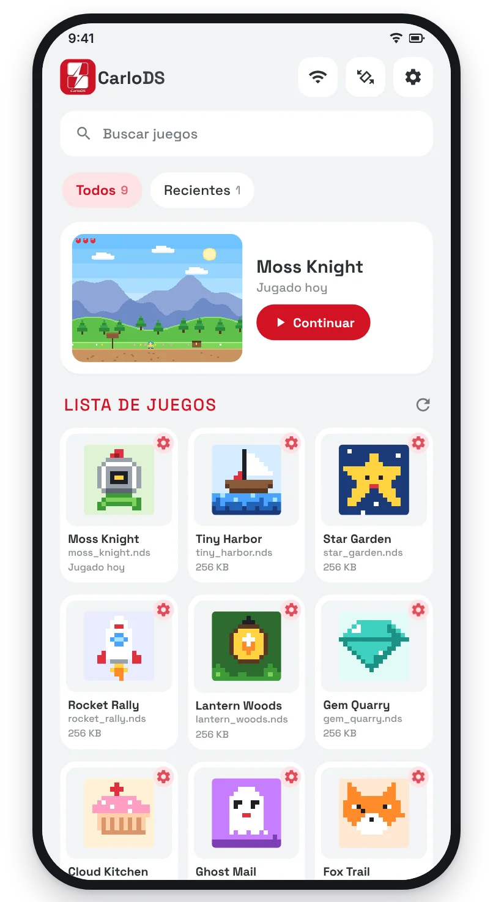
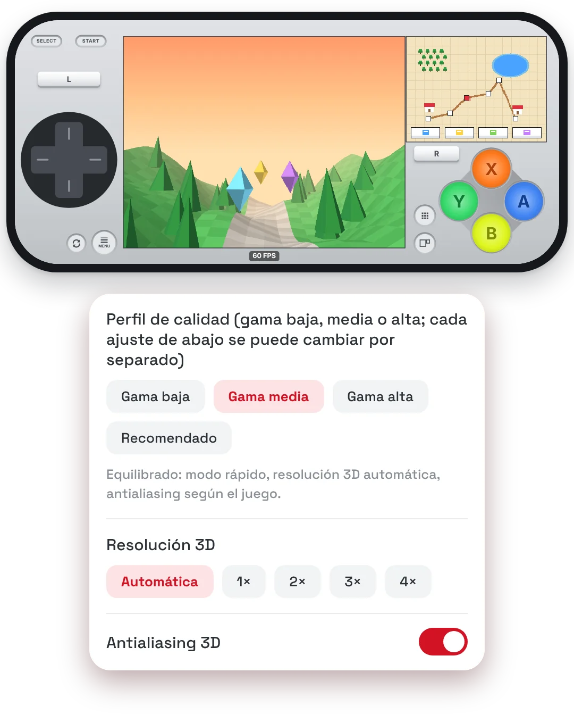
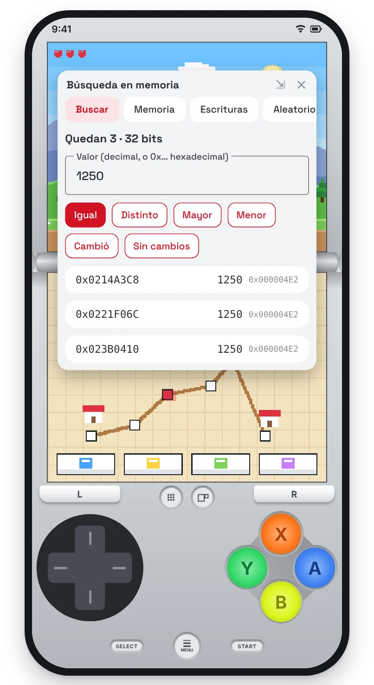

Funciones
CarloDS es un emulador de NDS para teléfonos y tabletas Android. Su núcleo de emulación –procesadores ARM9 y ARM7, gráficos 2D y 3D, audio, conexión inalámbrica y BIOS integrada– se basó inicialmente en el proyecto de código abierto SkyEmu (licencia MIT); desde entonces se ha reescrito y ampliado en gran medida, y está calibrado con pruebas en la consola original. La mayoría de los juegos funcionan sin archivos de BIOS; se admite el formato ZIP.
Núcleo de alta precisión
- Calibrado según pruebas en hardwareTemporización de CPU, DMA, renderizado 3D, antialiasing, recorte, etc.
- Dos núcleosEl preciso, el más fiel al hardware original, y el rápido con JIT, notablemente más veloz
- BIOS integrada; los archivos de BIOS y firmware propios de la carpeta de juegos se usan automáticamente

Biblioteca de juegos
- Lectura automática de iconos y títulos; compatible con subcarpetas y archivos ZIP
- Búsqueda, juegos recientes y acceso directo «Continuar»
- Portada personalizable para cada juego
- Prueba de rendimiento opcional en el primer inicio, con ajustes recomendados

Disposición de pantallas y controles
- Vertical, horizontal grande + pequeña, horizontal lado a lado y horizontal de pantalla única, con un toque e intercambio de pantallas
- Control táctil en la pantalla inferior
- Orientación de pantalla de libre elección
- Botones en pantalla ocultables para jugar con mando
- Cierre y apertura de la tapa (la mayoría de los juegos entran en reposo)

Gráficos y rendimiento
- Perfiles de gama baja, media y alta, y un perfil recomendado tras la prueba de rendimiento
- 3D hasta 4× de resolución (o automática), antialiasing 3D, suavizado de texturas y escalado 2D suave
- RenderizadoSoftware, OpenGL ES y Vulkan
- FiltrosSuavizado, LCD, líneas de barrido, xBR y nitidez CAS; brillo y contraste ajustables
- Opciones de rendimientoSalida de 16 bits, 3D multihilo, geometría instantánea, salto de fotogramas automático
- Ajustes de imagen, rendimiento y mando por juego
- Información en pantallaAnimación de inicio, FPS y estadísticas

Partidas y herramientas
- Varias ranuras de estado con opción de deshacer; guardado automático si se interrumpe el juego
- Avance rápido (hasta 4×), rebobinado (5, 10 o 15 segundos por toque) y disparo automático con velocidad ajustable
- Atajos en el juegoVolumen, guardado rápido, captura, tapa, trucos, búsqueda en memoria y rebobinado
- TrucosCódigos Action Replay, bases de datos usrcheat.dat y cheats.xml, y archivos .mch, .dct, .cht y de texto
- Búsqueda en memoria en una ventana flotante sin detener el juego, con visor de memoria y registro de escrituras

Juego inalámbrico y contenido descargable
- Juego inalámbrico local entre dispositivos de la misma red Wi‑Fi o mediante un punto de acceso móvil
- Sustituto integrado del servicio en línea ya cerrado, alojado en su dispositivo (juegos seleccionados)
- Contenido descargable (experimental)Regalos y distribuciones integrados, disponibles sin conexión

Funciones adicionales
- Compatibilidad con RetroAchievements
- Partidas en la nube mediante Google Drive
- Mandos y teclados con todos los botones reasignables
- Micrófono para juegos que requieren soplar o hablar; solo graba durante el juego
- Ranura GBAJuego de GBA desde RetroGenY, nuestro emulador de GBA, o Rumble Pak con la vibración del dispositivo
- Perfil de la consolaApodo, cumpleaños, color favorito, mensaje e idioma
- Informe de problemasEnvío de registros al desarrollador por correo electrónico